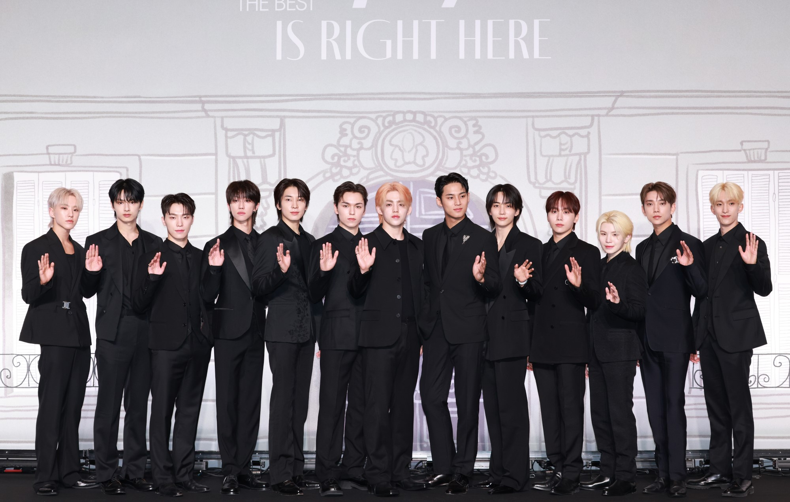
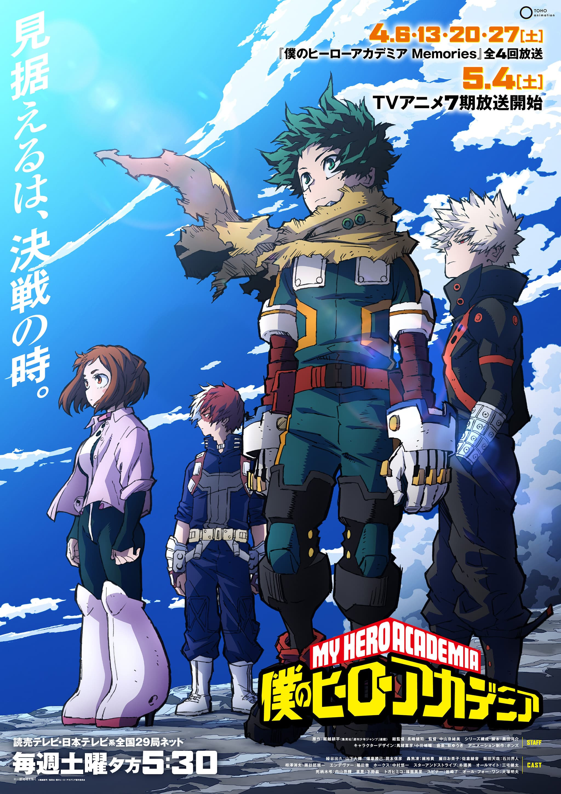

互動式網頁
seventeen
我的英雄學院
seventeen

SEVENTEEN（韓語：세븐틴 Se Beun Tin，日語：セブンティーン Se Bun Tīn）為韓國Pledis娛樂於2015年推出的十三人男子音樂團體，團體有「Hiphop Team」、「Vocal Team」、「Performance Team」三個小分隊 ，以及BSS（夫碩順）、JxW、HxW、CxM四個子團體。成員包括韓國籍S.COUPS、JEONGHAN、HOSHI、WONWOO、WOOZI、DK、MINGYU、SEUNGKWAN、DINO，美籍韓裔JOSHUA，美韓雙籍VERNON，以及中國籍JUN和THE 8。
我的英雄學院

《我的英雄學院》是日本漫畫家堀越耕平創作的一部現代社會背景下英雄題材少年漫畫，該作於日本漫畫雜誌《週刊少年Jump》2014年32號起開始連載，至2024年36、37合併號連載結束。 連載開始後被改編為各種系列的衍生作品，主要包括同名的動畫、電影、小說和電子遊戲等周邊媒體產品。